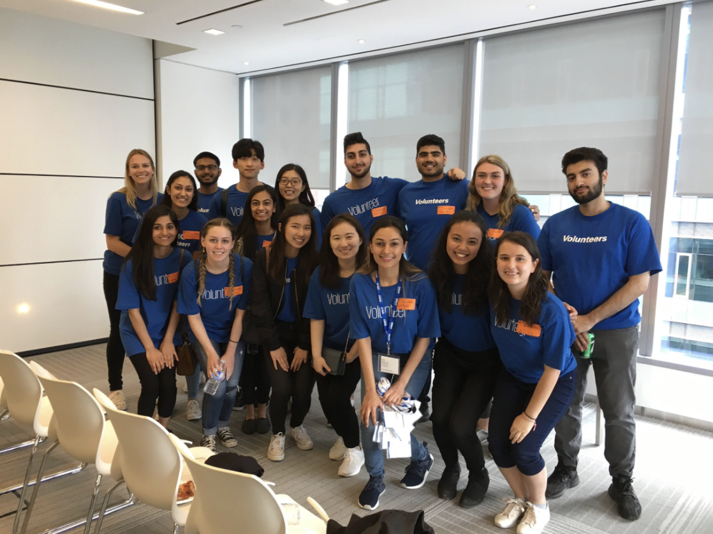
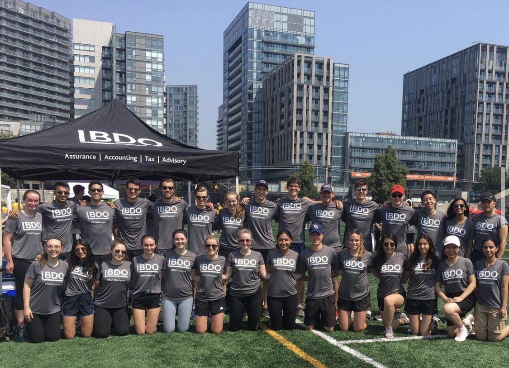
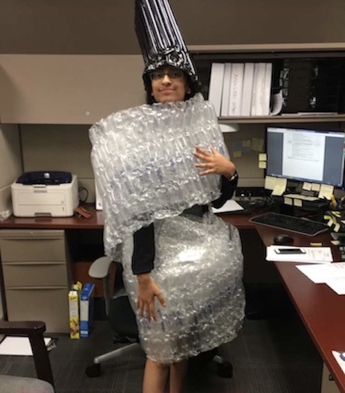
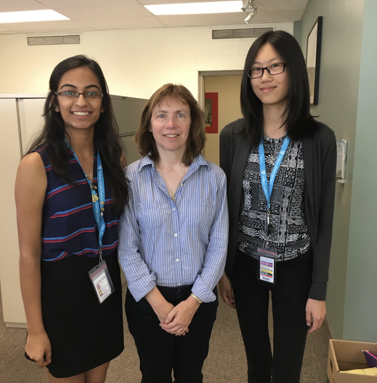

I'm a 4th year BBA student at Wilfrid Laurier University.
Problem Solver. Adaptive Mindset. Analytical Aptitude.
Professional Experience
KPMG - Staff Accountant
I worked within the audit sector with the financial institutions and real estate (FIRE) group. With my 2 co-op terms, one being busy season and the second being bank busy season I had the opportunity to work on a wide range of audits including large Canadian banks, real estate investment companies, luxury hotels, non-Canadian retail and commercial banks, investment dealers, insurance and finance companies. My tasks included analyzing and assessing clients' business processes, internal controls, and recommending areas of improvement. A standout project I was selected for was a first year engagement. This means, the testing and design of the audit engagement is brand new and there is no prior year procedures. Some of my first few engagements I worked on I was able to streamline certain testing and working papers by asking the correct questions which led to changes in testing. During work from home, for my main Fall 2020 client I was given the role of “CEO of Fun” where I was in charge of planning weekly ice breaker activities for bank teams during busy season. My manager was impressed with how I balanced producing high quality work, taking initiative and planning socials that I was recognized at KPMG for operational excellence.
BDO - Forensic Consultant & Accountant
As a consultant intern, I was able to tackle different projects including; corporate investigations, fraud prevention, qualitative due diligence investigations and litigation support. I also worked with clients to address a variety of business issues and opportunities, ranging from profitability pressures, to mergers and acquisitions and technology solutions. I had a large amount of autonomy in my role and was challenged in the tasks I was given. I completed written reports, slide decks, attended client meetings and completed financial analyses. During high work load times, I had the opportunity to get involved with conflict checks, business interruption, fraud and forensic audit work. I cannot stress how valuable this experience has been since I learned the full life cycle of an engagement! In my position, I assisted with approximately 25 different files over the 4 months all ranging in file type, complexity and industry.
Regional Power - Junior Staff Accountant
 Regional Power, a subsidiary of Manulife Financial based in Mississauga is in the business of hydroelectric power plants and renewable technologies including wind and solar. This role was exciting as I learned a lot of soft skills and how to manage tasks because I was communicating with many different departments and there was a steep learning curve about the industry. I worked directly with the controller and engineering department. I am proud to have implemented a new AP process where I used macros and VBA on excel to streamline the AP dashboard which reduced invoice backlog. I also got the experience of using Microsoft Dynamics SL. This job not only taught me technical skills but a lot about communicating with different seniority levels and learning styles. I had so much fun learning and working with such a diverse group of people that I even had the chance to help plan the annual summer picnic. It was interesting to work with a small business compared to a huge corporation.
Trillium Health Partners - A/P Analyst
During my time as an AP analyst, THP had just merged all the hospitals in Mississauga and the accounting department was migrating to a new software where all AP records were in a central location. My role comprised of data entry but my main project was to digitize list of vendors that all the hospitals used. This was successful as I broke it down into manageable phases and set my goals and objectives. I kept my tasks organized on excel and was given the chance to discuss any concerns at weekly status update meetings in front of the whole department. I was able to plan, execute and monitor my progress. All in all, by digitizing the records I was able to be proactive and build a masterlist tracker where the AP department is able to track how often a vendor is used, which hospital uses the vendor and payment cycles.